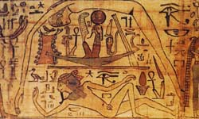

Геб, в єгипетській міфології бог землі, син бога повітря Шу і богині вологи Тефнут. Геб посварився зі своєю сестрою і дружиною Нут ("небом"), оскільки вона щодня поїдала своїх дітей - небесні світила, а потім знову народжувала їх. Шу роз'єднав подружжя. Геба він оствіл внизу, а Нут підняв вгору. Дітьми Геба були Осіріс, Сет, Ісіда, Нефтида.
Душа (Ба) Геба втілювалася в бога родючості Хнум. Стародавні вірили, що Геб добрий: він охороняє живих і померлих від живуть в землі змій, на ньому ростуть потрібні людям рослини, ось чому його іноді зображали з зеленим обличчям.
Геб був пов'язаний з підземним царством мертвих, а його титул "князь князів" давав йому право вважатися правителем Єгипту. Геб належав до геліопольським Еннеад богів. У «Текстах пірамід» Геб виступає як втілення підземного світу і бог Дуата, який бере участь в суді Осіріса над померлими. Дуата, в єгипетській міфології місце перебування померлих; по найдавнішим уявленням Раннього царства знаходився на небі, на сході, там, де сходить сонце. В епоху Середнього царства в Давньому Єгипті сформувалося уявлення про Дуате як про підземному світі за західним горизонтом, де Сонце заходить. Спадкоємець Геба - Осіріс, від нього трон перейшов до Гору, а наступниками і служителями Гора вважалися фараони, які розглядали свою владу, як дану богами.